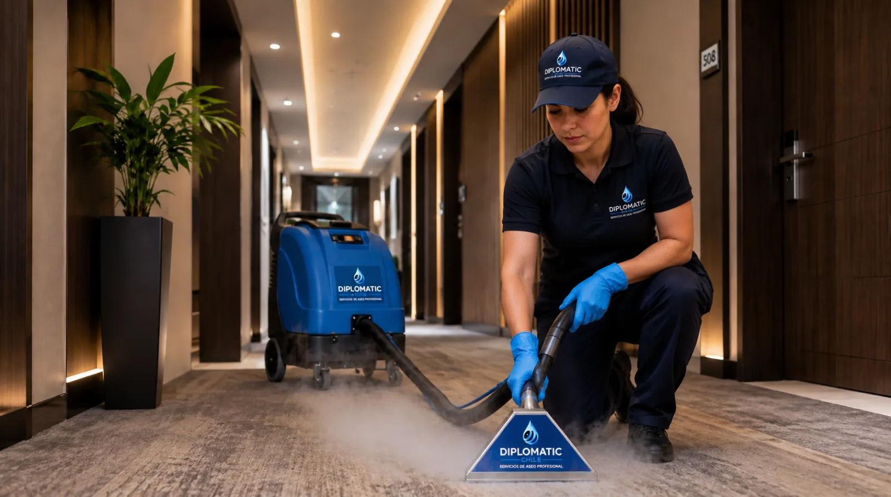

Limpieza profunda para recuperar presentación, higiene y vida útil de superficies textiles.

Las alfombras retienen polvo, manchas y suciedad que el aspirado cotidiano no siempre logra remover. Con el tiempo pierden apariencia, concentran residuos y proyectan una sensación de desgaste en oficinas, hoteles y espacios de alto tránsito.
Realizamos lavado y limpieza profunda de alfombras con maquinaria profesional y productos adecuados para superficies textiles. Antes de intervenir evaluamos el material, las manchas, el tránsito y las condiciones de secado.
Evaluación. Identificamos tipo de alfombra, manchas, tránsito y condiciones del área.
Preparación. Aspiramos y tratamos previamente los puntos especiales.
Limpieza. Aplicamos el método, maquinaria y producto definidos.
Revisión. Controlamos terminaciones y entregamos recomendaciones de secado.
Solicita una cotización o coordina una visita técnica.
Solicitar cotización